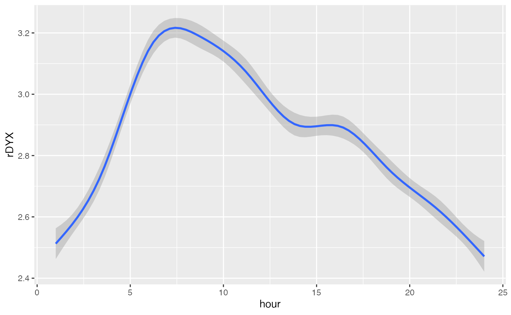

This vignette is still under construction. The cosinor function is still being developed.
The function cosinor() is built off of literature supporting the analysis of circadian rhythms. There are two other packages on CRAN that provide cosinor analyses that are very good, cosinor and cosinor2. This package was built for 1) learning about regression and model development, and 2) the raw material generated to allow for more expansive and experimental analysis of cosinor functions.
library(card) # Using the provide dataset data("twins") head(twins) #> # A tibble: 6 x 22 #> # Groups: patid, hour [6] #> patid age bmi race smoking hptn dm chf prevchd med_beta_blocke… #> <dbl> <dbl> <dbl> <fct> <fct> <fct> <fct> <fct> <fct> <fct> #> 1 1 49 27.4 0 1 1 0 0 0 0 #> 2 1 49 27.4 0 1 1 0 0 0 0 #> 3 1 49 27.4 0 1 1 0 0 0 0 #> 4 1 49 27.4 0 1 1 0 0 0 0 #> 5 1 49 27.4 0 1 1 0 0 0 0 #> 6 1 49 27.4 0 1 1 0 0 0 0 #> # … with 12 more variables: med_antidepr <fct>, beck_total <dbl>, #> # sad_bin <fct>, sad_cat <fct>, PETdiff_2 <fct>, dyxtime <dttm>, date <date>, #> # hour <dbl>, rDYX <dbl>, sDYX <dbl>, HR <dbl>, CP <dbl>
The twins dataset contains clinical covariates and continuous time measures, such as heart rate variability at each hour of the day. These continuous measures follow a circadian pattern.
library(ggplot2) ggplot(twins, aes(x = hour, y = rDYX)) + geom_smooth(method = "gam") #> `geom_smooth()` using formula 'y ~ s(x, bs = "cs")'

The cosinor analysis is straightforward, although currently rudimentary. Confidence intervals of the amplitude and acrophase can be generated (but are currently internal only). It creates the model using the hardhat package from tidymodels.
# Model m <- cosinor(rDYX ~ hour, twins) # Summary summary(m) #> Length Class Mode #> coefficients 3 -none- numeric #> coef_names 3 -none- character #> mesor 1 -none- numeric #> beta 1 -none- numeric #> gamma 1 -none- numeric #> amp 1 -none- numeric #> phi 1 -none- numeric #> fitted.values 16386 -none- numeric #> residuals 16386 -none- numeric #> formula 3 formula call #> area 465 -none- numeric #> blueprint 8 default_formula_blueprint list # Output m$coefficients #> mesor amp phi #> 2.8604855 0.2986101 -2.6687044 m$beta #> [1] -0.2658396 m$gamma #> [1] 0.1360048
Diagnostics can also be run. The most important is generating confidence intervals over the amplitude and acrophase. This is done through an elliptical method as described by Cornillessen (TODO).